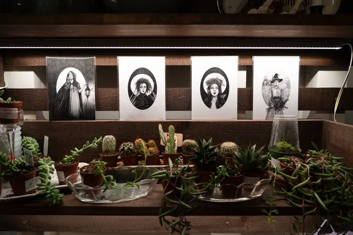

Skip to content
Jichu Mao
Series
About
Graphics work
Pennsylvania
October 2025
A gorge overlook, an orchard and a small town in autumn.
9 photographs

More series
Above the Fog
California, July 2025
10 photographs
Macau
January 2026
9 photographs